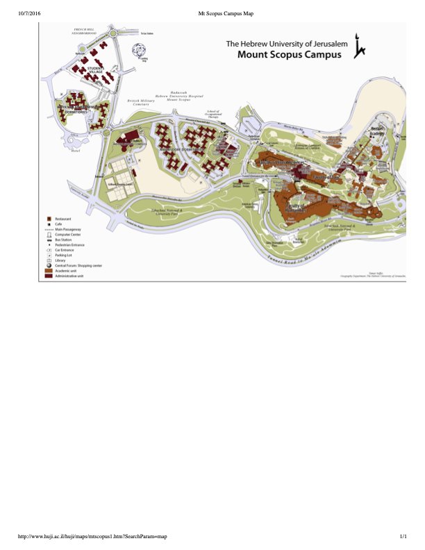

Simple Campus Logic
Choose a route
Your step-by-step directions will appear here.
Walking guide
Route Map
The highlighted line changes with your selected route.

Start
Destination
Highlighted route
Tip: if the signs around you feel confusing, walk back toward the central library and Frank Sinatra area,
then continue from there.